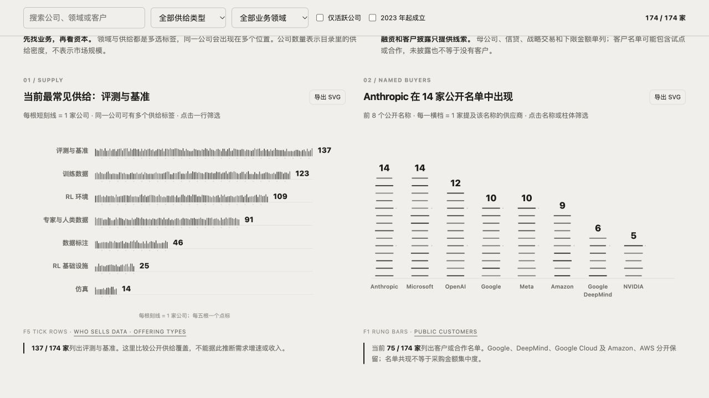
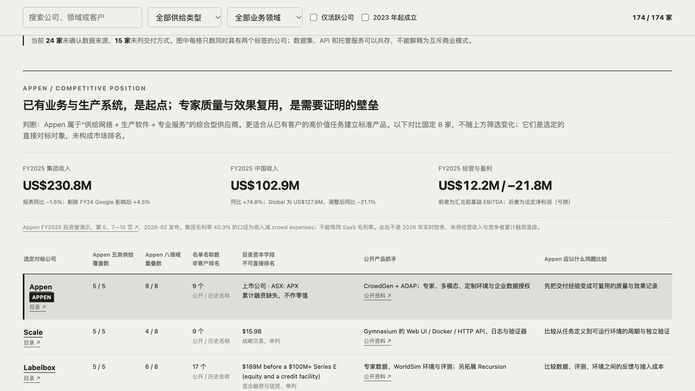

行业结论：从规模交付，向专家判断与任务效果延伸
AI 数据行业的价值重心，正在从“生产更多数据”，延伸到“让模型完成更有价值的真实任务，并证明效果”。 通用数据生产仍有需求；新增产品的差异化，更需要体现在任务定义、专家质量、可靠评分与反复使用的流程上。
这是一项基于目录供给结构和官方产品资料的方向判断。现有样本没有完整的收入、订单或价格时间序列，因此不能用它计算各赛道的增长率，也不能把供给公司多解释为市场增长快。
| 方向 | 发展位置与竞争特点（分析判断） | 客户为哪些结果付费 | 平台成立的条件 | 建议进入方式 |
|---|---|---|---|---|
| 通用标注与生产管理 | 已有成熟工具和服务商，效率竞争明显 | 稳定质量、更短交付周期、更低完整成本 | 自动化与流程复用持续降低成本 | 作为生产底座；新增平台需有明确场景优势 |
| 垂直专家数据 | 专业判断成为重要产品抓手，适合近期商业验证 | 高难任务质量、专家一致性、少返工 | 专家校准、任务规范和质量记录跨批次复用 | 有专家与交付基础的团队优先验证 |
| 垂直评测与失败反馈 | 有机会进入模型或 Agent 的持续迭代流程 | 发现业务失败、节省回归工时、验证改进 | 评分可信，客户每个版本都重复使用 | 有业务规则和真实失败样本时优先验证 |
| RL 环境与任务资产 | 公开产品正扩展到可运行环境、奖励和验证器 | 可重复训练或测试的真实任务 | 环境可复现、评分可靠、建设与运行成本可控 | 围绕具体客户任务建设，再检验复用 |
| 授权真实企业数据 | 权利与稀缺内容可能形成供给优势 | 合法可用、加工后仍有价值的数据资产 | 有明确用途、权利和实际买方 | 先确认买方与验收标准，再组织供给 |
| 机器人与物理 AI | 长期值得关注，采集、工程和验证链条较长 | 有效动作与传感器数据、场景覆盖、任务改善 | 有硬件客户，能做真机或独立任务验证 | 具备客户、采集与验证资源时专项进入 |
平台的核心竞争，集中在三类能力的组合。 Mercor、Surge 等强调专业供给；Scale、Labelbox 等展示软件与环境产品；Snorkel 等强调专家校准、任务标准和评分。这些能力在同一家公司可以共存，并非互斥阵营。对应的公开资料见下方 Appen 对标表。
对已有客户、专家网络和交付体系的团队，建议先做“一个垂直任务的专家数据质量闭环”，再接入该任务的评测和失败反馈。 第一阶段用现有付费任务验证质量、交付成本与第二次采购；第二阶段才扩大领域和供给。授权企业数据、RL 环境和机器人能力，应与具体买方和验收需求一起扩展。
选择首个任务时，优先同时满足四点：已有付费客户；能够取得真实失败样本；采购有重复发生的可能；可以在独立保留任务上验收效果。扩大平台前，要看到更好的质量、更低的完整交付成本和复购。
对 Appen 的含义：广覆盖提供切入基础，专业质量和复用结果决定竞争力。 建议依次验证垂直专家质量闭环、同类任务的评测与失败反馈、有买方的授权企业数据加工。RL 和机器人项目按明确客户需求投入，避免用标签覆盖数替代产品价值。
读图提示：标签数量表示供给覆盖；融资表示目录资本记录；客户名单表示公开关系线索。三者都不能直接换算成收入、成交率或竞争力排名。供给刻线中 Appen 的水平位置按公司标识排序，无竞争排名含义。
全市场：先看分母，再决定进入路径

本次范围为 Who Sells Data 全部 174 家供应商。覆盖全部供给类型与业务领域，不预筛选 Simulation。
打开交互看板 · 快照 2026-10-26 · 分析 2026-11-03。HTML 已内联图表代码与分析所需数据，图表可离线运行；原始来源链接需联网。
这份看板帮助选择需要验证的业务，不用融资与客户披露制造机会评分。 六图分别回答供给密度、客户名单共现、领域与产品交集、逐公司融资分布、领域资本与名单披露、来源与交付方式。全部图可导出带标题与快照日期的 SVG；可使用浏览器打印保存 PDF。
从全样本看，值得带进讨论的六个事实。
- 评测 137 家、训练数据 123 家、RL 环境 109 家、人类数据 91 家、标注 46 家。标签多选，这是供给数量，不是收入或采购份额。
- 编程涉及 67 家，企业工作流 60 家，机器人与物理 AI 49 家；金融 44 家、医疗 40 家、法律 33 家。多领域标签另有 88 家，不自动展开到具体行业。
- 105 家能提取单一美元融资金额，中位数约 1,000 万美元；最高 10 家合计约占该样本金额的 69.8%。这是经分口径后的目录金额，未独立审计。
- 52 家融资金额未公开或未确认；17 家属于下限、母公司、信贷、战略交易、自筹、历史或其他文字口径。未知不是零。
- 75 家列出公开客户 / 合作名单，覆盖 43.1% 的公司。Anthropic 与 Microsoft 各被 14 家提及，OpenAI 被 12 家提及。Google、Google DeepMind、Google Cloud 分开保留。
- 样本有 117 家在 2023 年或之后成立。目录来源偏向新兴 RL 和 Agent 供给，这不能直接推导行业新增企业数量或增长率。
领域资本与客户披露，应该一起看分母。
融资列仅使用“单一金额”样本。客户列的分母是该领域全部公司；两个字段分母不同。领域之间有重叠。
| 领域 | 全部公司 | 单一融资金额样本 | 融资中位数 | 有公开名单 | 披露比例 |
|---|---|---|---|---|---|
| 编程与软件工程 | 67 | 38 | $8.8M | 31 | 46.3% |
| 企业工作流 | 60 | 37 | $7.9M | 26 | 43.3% |
| 机器人与物理 AI | 49 | 22 | $29.85M | 22 | 44.9% |
| 金融 | 44 | 22 | $35.95M | 27 | 61.4% |
| 医疗 | 40 | 25 | $31.7M | 28 | 70.0% |
| 科学研究 | 34 | 18 | $17.75M | 18 | 52.9% |
| 法律 | 33 | 18 | $46M | 23 | 69.7% |
| 电脑操作 | 32 | 25 | $5.98M | 15 | 46.9% |
| 安全 | 23 | 10 | $13.85M | 12 | 52.2% |
| 浏览器操作 | 17 | 13 | $7M | 12 | 70.6% |
| 数学 | 15 | 6 | $56.25M | 9 | 60.0% |
| 其他 | 11 | 5 | $4.5M | 3 | 27.3% |
| 游戏 | 11 | 7 | $4.5M | 3 | 27.3% |
| 创意内容 | 11 | 7 | $18.5M | 2 | 18.2% |
医疗、法律、金融在本样本中的公开名单披露比例较高，但不能等同于更高成交率、复购率或更大的可服务市场。相关领域常被成熟、多领域企业同时覆盖，融资中位数也会受公司年龄和业务范围影响。
只看新进入者，比较会明显变化。
| 领域 | 全样本融资中位数 | 2023 年起成立公司中位数 | 新公司总数 / 单一金额样本 |
|---|---|---|---|
| 编程与软件工程 | $8.8M | $7.45M | 41 / 28 |
| 企业工作流 | $7.9M | $4.05M | 36 / 28 |
| 机器人与物理 AI | $29.85M | $15M | 30 / 15 |
| 金融 | $35.95M | $13M | 20 / 12 |
| 医疗 | $31.7M | $15.75M | 17 / 12 |
| 法律 | $46M | $24M | 12 / 8 |
例如企业工作流从约 790 万美元降到 405 万美元，机器人从约 2,985 万美元降到 1,500 万美元。它们支持“检查企业年龄差异”这个动作，无法证明创业所需预算就是上述金额。融资高低不能替代技术门槛、客户获取和单位交付成本分析。
不同团队，进入路径应不同。
| 团队已有能力 | 优先验证的产品 | 第一笔钱来自什么 | 最大的商业风险 |
|---|---|---|---|
| 专家网络、标注质检、专业交付 | 某个行业的专家数据生产与质量管理 | 更少返工、更一致的任务 / 标签、可追踪审阅 | 每单重新设计，软件和流程无法复用 |
| 企业客户与授权数据 | 跨系统真实数据的关联、去标识化、许可整理和任务加工 | 买方能验收的独特数据或工作流资产 | 权利不足、买方缺失、隐私处理破坏使用价值 |
| 业务规则与评测工程 | 垂直评测、回归与失败数据迭代 | 发布前发现问题，减少人工测试，持续更新 | 有测试使用但没有预算；评分器产生共同盲点 |
| 机器人客户、采集网络和验证能力 | 动作 / 传感器数据采集、筛选和质量检查 | 单位有效数据成本下降、任务覆盖提升 | 缺少真机或独立任务验证，工程成本过高 |
以上是分析判断，均需与现有平台、自建工具和服务商比较。不能因目录里某种交集少就认定没有竞争。全目录对中国市场、企业 RAG、传统数据治理和仅做基础设施的供应商覆盖不足，这些方向需要另补样本。
建议按一条完整链路做决策。
- 在领域矩阵中选业务，查看供应商与产品交集，挑出 5—10 个实际替代方案。
- 看融资分布并切换到新公司，检查是否被大公司或特殊交易影响。
- 从公开名单选择潜在买方，确认对方购买的具体产品、预算和使用频率。
- 用两家设计客户完成付费试点，事先约定质量、工时或交付效果的验收口径。
- 等第二次付费和单位交付成本下降出现，再决定扩成标准平台。
数据与方法。
- 主数据：目录 JSON；目录方法与维护者披露。图表按同一快照计算。
- 全样本融资字段的口径分类是本次分析整理，不是目录的官方分类。Scale、Labelbox、Bugcrowd、母公司与历史口径保留原文，默认不进入金额比较；不把公司累计融资相加后当成行业市场规模。
- 公开客户字段按名称保守规范，不把合作、试点和研究关系强行解释为付费客户，不依据名称出现频次推断收入集中度。
- 目前没有全样本的收入、成交金额、合同价格、使用频率、续费、单位交付成本与独立效果数据。公开页面不展示的能力不等于没有。
- 每家公司可在看板详情查看各字段来源与核对日期。此次未重新核验全部 174 家的当前产品或融资，分析日期不等于所有字段更新日期。
Appen：综合供给是基础，专业质量与复用是关键

判断：Appen 是“供给网络 + 生产软件 + 专业服务”的综合型供应商。 它有把专家生产、多模态数据和企业交付做成可复用产品的基础；优先验证的切口是一个专业任务上的质量与效果闭环。覆盖更广、贡献者总量更大，都不足以单独证明壁垒。
打开已点亮 Appen 的全市场看板。默认仍为全部 174 家，Appen 单独标记；可以只看 Appen 或筛选八家对标公司。目录快照 2026-10-26，官方产品页面核对 2026-11-03，经营数据为 FY2025，未假设已核对 2026 最新报表。
先看 Appen 所在的位置。
- 目录覆盖训练数据、人类数据、评测、RL 环境、标注五类；174 家中有 17 家（含 Appen）覆盖这五类，共 57 家至少覆盖其中四类。标签相似是同题对比的起点，不是产品质量相同。
- 目录列出八个具体领域：医疗、法律、科学、金融、编程、浏览器、安全、企业工作流；另有“多领域”标签。交付为数据集、API、托管服务，数据来源列专家 / 承包商与授权真实数据。目录记录
- Appen 是 ASX: APX 上市公司。目录累计融资字段缺失，不能画在零融资位置，更不能把其经营收入与其他公司的累计融资放在一起排名。投资者资料
- 九个公开名称是历史 / 公开客户与合作线索，不能视为九个当前在付费客户。Google 包含在目录名单中，但 FY25 投资者演示明确提到 FY24 Google 合同终止。原 /partners 本次跳转至联系页，当前关系须另核对。FY25 演示，第 5、9 页
- 官网已列 Physical AI，FY25 项目例子包含机器人数据模拟，目录没有该标签不等于 Appen 不做机器人。看板保留同一历史快照，不悄悄更新 Appen 单家后再与旧同行比较。Appen 首页 · FY25 第 13 页
经营数据体现了规模，也体现了转型压力。
| FY2025 指标 | 公开披露 | 对平台决策的含义 |
|---|---|---|
| 集团收入 | US$230.8M；报表同比 −1.5% | 有实际业务规模，整体并非高速增长 |
| 剔除 FY24 Google 影响后的集团同比 | +4.5% | 调整口径需与报表同比并列，不能混用 |
| 中国收入 | US$102.9M；同比 +74.8% | 优先核实中国既有客户的 LLM、国际化与多语言预算 |
| Global 收入 | US$127.9M；调整后同比 −21.1% | 全球客户和新产品订单的恢复需继续跟踪 |
| 汇兑前基础 EBITDA | US$12.2M；利润率约 5.3% | 调整后经营指标为正，不能当作净利润 |
| 法定净利润 | −US$21.8M | 仍需验证产品投入带来的盈利和现金回报 |
| 年末现金 | US$59.8M，2025-12-31 时点 | 资本判断可参考经营与现金；不是 2026 当前余额 |
来源：FY25 投资者演示，第 5、7—10 页。基础 EBITDA 排除重组、交易、收购相关及一次性股权费用；毛利率 40.3% 的口径是收入减 crowd expenses，不等于 SaaS 毛利率。公司将中国增长归因于新增 / 扩大的 LLM 项目和中国客户国际化，此处属于公司披露。
选定的八家公司，竞争抓手有什么不同。
| 公司 | 覆盖 Appen 五类供给 | 与 Appen 八领域重叠 | 公开抓手 | Appen 应证明什么 |
|---|---|---|---|---|
| Appen | 5/5 | 8/8 | CrowdGen + ADAP；专家、多模态、定制环境与企业数据授权 | 先把交付经验变成可复用的质量与效果记录 |
| Scale | 5/5 | 4/8 | Gymnasium 的 Web UI / Docker / HTTP API、日志与验证器 | 比较从任务定义到可运行环境的周期与独立验证 |
| Labelbox | 5/5 | 6/8 | 专家数据、WorldSim 环境与评测；另拓展 Recursion | 比较数据、评测、环境之间的反馈与接入成本 |
| Mercor | 4/5 | 6/8 | 专业人才网络、APEX 行业基准、企业数据授权 | 比较专家招募、校准、首次合格交付与复购 |
| Snorkel | 4/5 | 6/8 | 专家校准、rubric、程序化评分与可复现评测 | 比较复杂任务的评分可信度和模型效果增益 |
| Surge | 5/5 | 6/8 | 专家领域数据、RLHF、rubric / verifier、多语言 | 比较多语言专业任务的质量、速度与成本 |
| Toloka | 5/5 | 3/8 | 专家 / 合成数据、Agent 数据与环境；本次官网受限 | 用同题试交付比较质量和运行效率 |
| Turing | 4/5 | 7/8 | 编程、知识工作数据和 RL 环境、公开基准 | 比较代码 / 企业任务的技术深度与验收方式 |
两列计数来自目录，不能解释为完整能力覆盖或胜率。固定对标对象包含人类专家供给、数据平台与环境产品的直接替代方案，未构成市场排名。Toloka 官方页本次返回 403，Turing 沿用目录所引官方资料；其他所列页面本次重新核对，但均未登录完成实际项目。
Appen 有基础的三项优势，以及各自的限制。
- 生产与质检可复用。 ADAP 已公开多模态工具、多阶段审阅、gold questions、贡献者监控、API / webhook；CrowdGen 有专家申请、领域匹配和任务入口。这是把交付流程做成软件的基础。实际工作流速度、可用专家、任务一致性与单位合格样本成本，仍需内部数据和同题试交付验证。累计已付费贡献者不等于当前活跃专家产能。
- 中国业务的客户与交付基础。 FY25 中国业务增长支持优先从已有付费任务寻找新品，而非先假设一个全新市场。跨客户可复用比例、需求频率和预算归属未公开；中国与海外的数据、权限与平台也不能假设自动互通。FY25 第 8 页
- 从数据到验收的业务链条已公开。 企业数据页面 描述授权范围、抽取、匿名化、样本批准和按验收付款；RL 页面 描述环境、奖励、课程与保留评测任务。将这些和专家生产连起来有机会积累任务标准、质量记录与数据版本。这是产品化方向的分析判断，并非已验证的整条产品流程。
竞争压力集中在三件事。
- 专家数量要转化成专家质量。 Mercor 展示行业基准与专业人才网络，Surge 覆盖专家、多语言与 rubric，Snorkel 明确强调专家校准和程序化评分。Appen 需要用同任务的招募周期、校准结果、审阅分歧、返工和效果回答竞争问题。公开人数、平台历史和客户 logo 都不能替代这些指标。Mercor · Surge · Snorkel
- 从定制项目走向可运行资产。 Appen RL 页面要求共同定义项目；Scale Gymnasium 文档给出 Web UI、Docker、日志与验证器。公开入口说明包装方式有差异，但不能据此断言 Appen 缺少内部运行能力。应对比从任务描述到可运行版本的时间、独立任务通过率、评分可信度和跨批次环境复用。Appen · Scale
- 新平台要改善经营。 FY25 Global 收入收缩、集团仍亏损，因此软件项目应有可追踪的付费、毛利和复购目标。现有公开数据无法拆出软件收入、项目级利润、获客成本或留存，不给“平台竞争力几分”的任意评分。FY25 第 7、9 页
建议投入顺序。
| 顺序 | 产品切口 | 复用已有资产 | 扩建前的商业验证 |
|---|---|---|---|
| 优先 | 垂直专家数据质量闭环 | 客户、专家招募、生产、质检与审阅 | 两家客户收费试点；第二轮付费；完整单位成本下降 |
| 随后 | 一类企业任务的评测与失败回流 | 业务规则、失败案例、专家校准与评测设计 | 保留任务上的效果；评分可信；版本反复使用 |
| 有买方再扩 | 授权企业数据加工 | 企业合作、抽取、匿名化和专业审阅 | 权利用途清楚；加工后仍有价值；买方验收与复购 |
建议先由业务负责人挑一个有预算、能提供失败样本的现有客户任务，产品与交付团队共同试做：失败案例 → 任务规范 → 专家校准 → 生产审阅 → 独立验收 → 版本反馈。新平台的价值应体现在更快合格交付、少返工和可验证效果，再决定扩大供给和领域。
内部还需核对：ADAP 与国内平台的关系和接口、可用专家而非注册人数、当前付费客户与预算、项目级毛利、交付周期、返工率和第二轮采购。此处未调用或检查任何内部平台，不把公共介绍当作已运行验证。
看板如何点亮 Appen。 默认保持 174 家；供给刻线、客户横档中的 Appen 记录加粗并标记，领域与来源 / 交付标签加 A 标记。融资不为其虚构点位；领域散点的外圈只说明 Appen 涉及该领域，点坐标仍是整个领域统计。公司表将 Appen 置顶，可开原始资料。筛选移除 Appen 时显示提示并停止绘制标记。固定八家对比与官方资料说明保留，便于回到完整判断。
来源、日期与使用边界
本页整理自公开目录与供应商官方产品、投资者资料，不代表任何供应商的官方立场。全市场统计使用同一 2026-10-26 快照；对 Appen 等选定公司的官网核对日期为 2026-11-03。公开发布不代表再次核验了全部公司的最新状态。
- Who Sells Data 目录、目录 JSON、方法与维护者披露。目录由 Secludy 维护，来源偏向新兴 RL 与 Agent 供给，不完整覆盖中国市场、企业 RAG、传统数据治理与基础设施供应商。
- Appen ADAP、CrowdGen、Appen RL 环境、企业数据、投资者资料。财务口径及对应演示文件见上文原始链接。
- 供应商官方介绍是公开声明，未等同于登录实测；缺少公开标签不能解释为缺少能力。融资口径、名单关系、时间差异和样本重叠，详见市场比较及看板统计口径。
报告和图表用于组织商业验证。优先级为有条件的分析判断；当前缺少完整收入、订单、价格、续费、单位交付成本和独立效果数据，不给各赛道或供应商任意打分。
打开完整交互看板 →